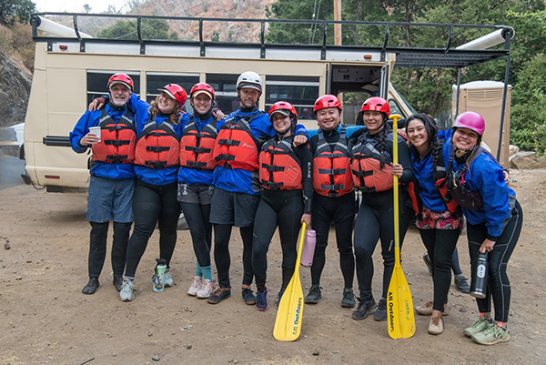
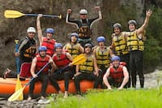
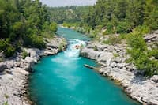
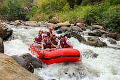

Enjoy two days of paddling, camping, and lasting memories. You will raft both sections of the South Fork and enjoy an overnight stay at our comfortable riverside camp - complete with meals, hot showers, flush toilets, electricity, and a small general store. Unplug and settle in, we'll take care of the rest!

Our Trips
we have the best rafting trip for you and your group.

There are a variety of discounts for group rafting trips. All types of groups are welcome! Groups of 6 or more: 5% off Groups of 12 or more: 10% off Groups of 18 or more: 15% off Discount applied automatically to eligible groups.25% Pre-Season Sale During November, December, or January save 25% on any trip for the following season. Applies on reservations Applies on Rafting Trip Certificates All trips April - October




